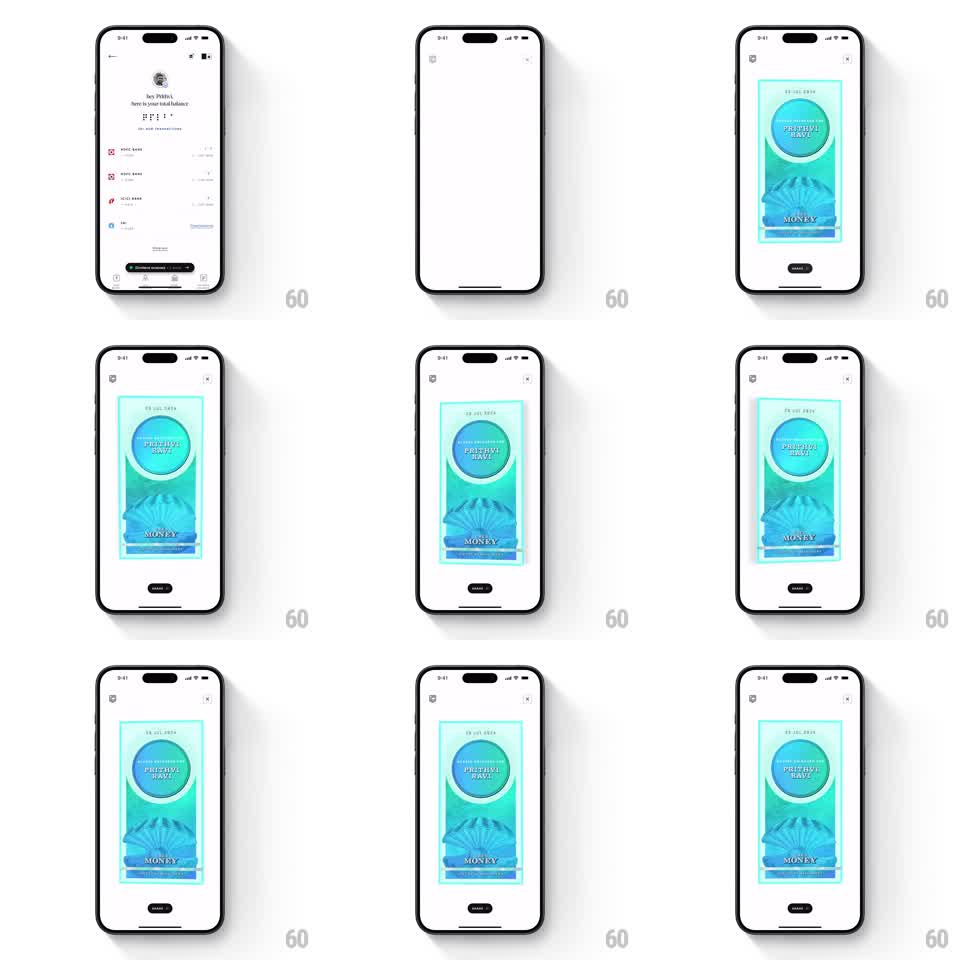

Media
Frame-by-frame

Rebuild this interaction 1:1: CRED's invite card - a premium vertical card on a white screen that responds to device tilt with layered 3D parallax and a glossy light sweep across its holographic surface.

Rebuild this interaction 1:1: CRED's invite card - a premium vertical card on a white screen that responds to device tilt with layered 3D parallax and a glossy light sweep across its holographic surface. ## Integration Integration: stack-agnostic spec - springs given as stiffness/damping, timed motions as duration + curve; map every value to your framework and animation library of choice. ## Scene White modal screen (close X top-right, shield glyph top-left, SHARE pill bottom-center). Centered: a tall premium card with a mint-holographic foil finish - an embossed circle seal reading "PREMIUM MINT" at top, a shell motif below, "MONEY" engraved near the bottom, and a serial line. The card has visible depth: raised foil elements over a shifting iridescent base. ## Motion spec Pattern: gyroscope-driven 3D parallax with foil gloss. - Tilting the device rotates the card in 3D (rotationX/rotationY up to +-10deg, mapped to tilt with smoothing - low-pass filter, ~150ms lag). - Internal layers parallax at different rates: the foil base moves least, the seal and shell motifs shift slightly more (1.2x), the engraved text most (1.4x) - the card feels thick, not flat. - A specular gloss band sweeps across the foil opposite to the tilt direction, its intensity peaking at mid-tilt angles - like catching light on a holographic sticker. - On release of tilt (device level), the card settles back to flat with a soft spring (stiffness ~180, damping ~16). ## Calibration - Clamp rotation near +-10deg; beyond that the card reads as tipping over rather than catching light. - The gloss sweep is the premium cue - it should be bright but narrow, a band, not a wash. ## Reduced motion Card is static; a single slow gloss sweep plays once on entry. ## Don't miss - Layer speeds must differ - uniform movement collapses the 3D illusion instantly. - The foil shifts hue subtly with angle (mint to aqua); a fixed-color surface kills the hologram feel.